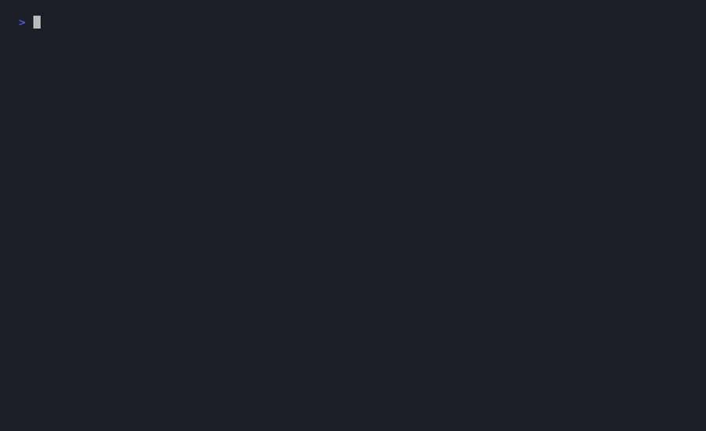
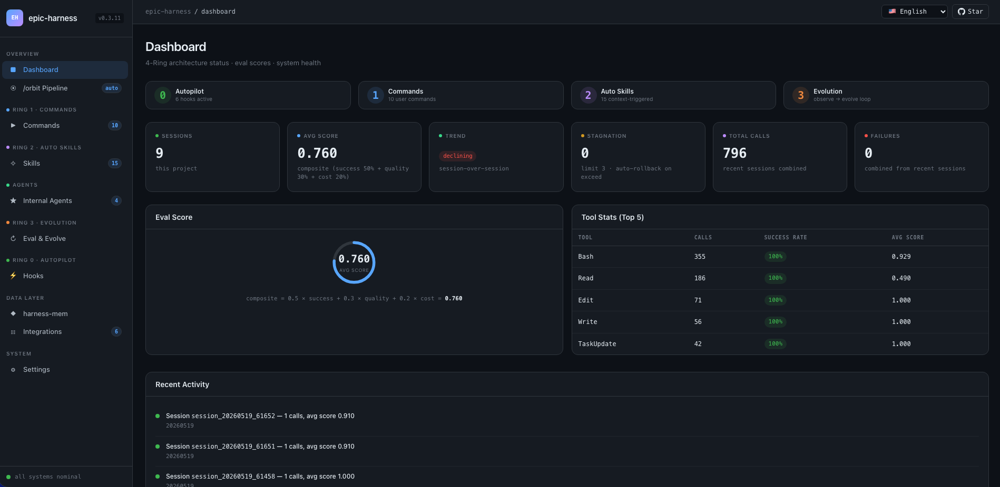
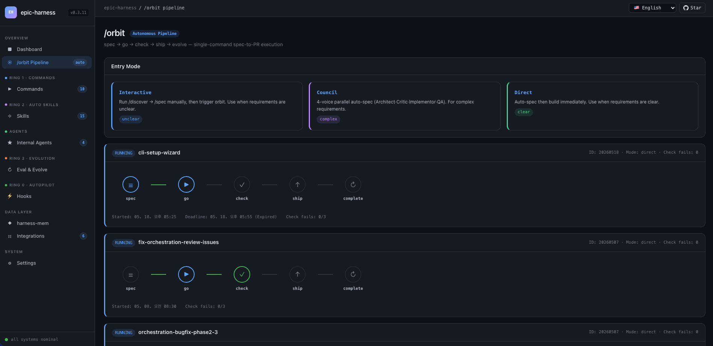

epic-harness folds thirty agent commands into three, enforces TDD and security while your agent works, and after every session turns what broke into new skills it loads next time.
The problem
Left alone, an agent repeats the same error, edits, breaks the build, edits again, and takes shortcuts on auth code. You find out at review time. epic-harness watches every tool call from the inside and intervenes while it matters.
Nothing tracks failure history, so the agent re-enters loops it already escaped — and pays for them again tomorrow.
An edit "succeeds", the build fails, another edit. Without edit↔error cycle detection, thrashing looks like progress.
Auth and DB code gets written however the model feels that session. No checklist, no threat model, no gate before the PR.
Measured, not claimed
Run with benchmarks/ab/run_director.py against the bare model — methodology and raw data are in the repo.
Ring 0 Guard 50 · Golden Set task4/task5 · SWE-bench Verified B1/B2/B4 · full reports in benchmarks/ab/
One command to a PR
Clear requirement? It goes straight through. Ambiguous? It stops and asks. Three failed checks? It pauses for your call. Everything else is hands-off until the pull request.
Numbered requirements + acceptance criteria. Council of 4 voices when the design is contentious.
Auto-planned tasks, test-first subagents, parallel execution, criteria verified.
Parallel code review + security audit + tests. FAIL retries up to 3×, then asks you.
Isolated worktree test, PR with the full check report in the body, CI watched and auto-fixed.
The session is analyzed automatically and new skills are seeded for next time.
Pipeline state persists as JSON after every phase — it survives context compaction. Prefer the pieces? /spec /go /check /ship still work on their own.

a real session, unedited
Mission control
Ten live screens ship with the harness — eval scores, tool stats, the /orbit pipeline, evolved skills, hook health. It opens itself with your first session on localhost:7700. The Eval & Evolve screen shows the learning engine’s actual state: reward-hacking warnings, the seesaw registry, and what it wants to try next.


Architecture
resume restores context and detects your stack. guard blocks force-push-to-main, rm -rf /, DROP prod. polish auto-formats (Biome/Prettier/ruff/gofmt) and typechecks. observe logs every tool call.
/orbit spec→PR in one shot · /team design and sync org-level agent teams · /evolve inspect the learning loop.
tdd on new features, debug on test failures, secure when auth/DB code is touched, perf on hot loops, simplify past 200 lines, threat-model / vuln-scan / triage as a full security pipeline — you never invoke them.
Failures become seeded skills. Every skill is A/B-tested against a holdout arm; proven ones stay. Details below.
Ring 3 — the part nobody else has
Every session is scored on tool success, output quality, and execution cost. Four pattern detectors — repeated errors, fix-then-break cycles, debug loops, thrashing — trigger skill proposals graduated by severity.
The loop defends itself: a seesaw gate blocks seeding when a solved task regresses, a critic rejects reward-hacking edits that trade quality for cost, variant isolation forks a sibling instead of overwriting, and 3 sessions without 5% improvement rolls back to the best checkpoint. Each skill's real effectiveness is measured against a holdout arm — evolve history shows the With / Without delta. Cold-start presets for Rust, Go, Python, and TypeScript mean day one is already useful.
Usage
/plugin marketplace add epicsagas/plugins /plugin install epic@epicsagas
codex plugin marketplace add epicsagas/plugins
agy plugin install https://github.com/epicsagas/epic-harness agy plugin enable epic
brew install epicsagas/tap/epic-harness # or cargo binstall epic-harness # or curl --proto '=https' --tlsv1.2 -LsSf \ https://github.com/epicsagas/epic-harness/releases/latest/download/install.sh | sh
epic --version ls ~/.harness/ # data dir, auto-created on first session
No setup wizard. The binary self-seeds ~/.harness/config.toml on first run; the web dashboard (10 live screens) opens with your first session. Stack presets apply themselves on day one. Telemetry is anonymous and off-able: epic-harness telemetry off.
| tdd | new feature or bug fix — red→green→refactor enforced |
| debug | test failure or runtime error — root cause first |
| secure | auth / DB / API / secrets code touched |
| perf | loops, queries, rendering, batch ops |
| simplify | file over 200 lines or high complexity |
| verify | before any "done" claim — build, test, lint pass |
| council | ambiguous architecture call — 4 voices, then one answer |
| threat-model / vuln-scan / triage | three-stage security assessment pipeline |
Before you ask
Yes — Codex CLI (full hooks) and Antigravity (partial: no PreToolUse, so guard/polish are unavailable) share the same ~/.harness/ data. The binary also runs standalone with brew / cargo / curl.
Anonymous usage telemetry only — command name, duration, outcome, failure class, OS, and a random install id. Never source code, file contents, paths, env vars, or secrets. Turn it off any time: epic-harness telemetry off.
That's what the gates are for: format + dedup + a 10-skill cap, holdout A/B measurement, seesaw protection against forgetting, critic rejection of reward-hacking edits, and automatic rollback after 3 stagnant sessions. Static core skills always outrank evolved ones.
Add project rules to .harness/guard-rules.yaml — block or warn patterns with messages — and commit it so the whole team shares them. Hook intensity is configurable: minimal / standard / strict profiles.
Install the plugin, run one command, and let the harness keep the lessons.